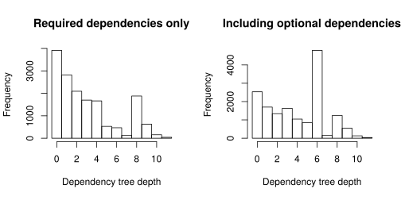
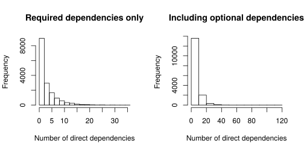
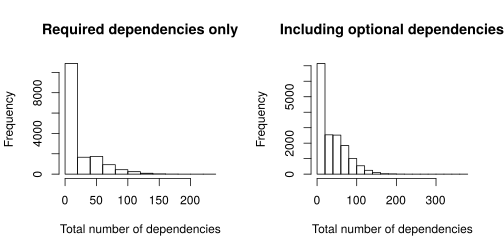

I stumbled upon a very interesting article while reading LWN. It raises the topics of dependency problems in package repository ecosystems with NPM as an example. (The follow-up article briefly discusses Rust package registry and reaches very different conclusions.)
Unlike NPM with its 50G JSON metadata, R can get away with downloading the entire list of packages from CRAN and putting it into memory. CRAN says there are 16027 available packages; the actual choice may be less because of R version requirements, OS and 32-bit/64-bit subarchitecture incompatibility. Some packages are part of R, while others are heavily recommended (to the point of ./configure refusing to continue unless a parameter is supplied or the packages are downloaded). We will not count those packages as dependencies.
Since we can get away with it, we are going to put all dependency information into memory. NPM developers may consider CRAN to be cute. We will consider two dependency graphs:
- By default,
install.packagesonly installs dependencies strictry required to make the package work. - Optionally, a package may suggest another package, but when it decides to use the suggested package, it should perform a dependency check and provide a workaround in case the suggested package turns out to be missing.
When installing binary packages (which is done on Windows and macOS when using official builds of R), the set of packages to install is even smaller (LinkingTo, which is used for packages containing headers and test dependencies, is omitted in this case). We are going to ignore this case.
There are no cycles in the dependency graph, because the dependency resolution algorithm would infinitely loop on them. If one does require installation of suggestions of suggestions, that's another story (an experiment performed using igraph suggests that most packages would depend on 10% of the whole CRAN right away and dependency cycles of all lengths abundant), but we are not going to do that, because that was clearly not intended to be done.
Let's take a look at dependency tree depths. As in the original article, we define the dependency tree depth as the number of iterations that the resolving algorithm took until it didn't have to add more dependencies to the list of packages to install.

So far, so good. When installing required dependencies only, most packages have 4-deep dependency trees and less. Suggested packages make it 6 for some reason, and there is also this weird peak at 8 (with its own decay!), but it's not too high.
Are the highly dependent packages themselves depended upon?

Mostly not, but there are a few exceptions, including:
- viridis doesn't even contain the palette (that's in
viridisLite, which doesn't have any required dependencies and has about 3000 reverse-dependencies), but it does depend onggplot2, which is a huge dependency hog. - ggplot2, testthat, tibble, dplyr, tidyr, pkgload, pkgbuild are all a part of so-called Tidyverse, an "opinionated collection of R packages designed for data science", which have two things in common:
- they like to depend on each other
- they all have
RStudio [cph]in theirAuthor:field in theirDESCRIPTION.
- isoband doesn't have non-core dependencies otherwise, but uses
testthatfor testing, which takes a huge chunk of Tidyverse with it. It is also a dependency ofggplot2.
Do any packages have many direct dependencies? Again, core and recommended packages do not count towards dependencies.

The answer is: typically, less than 4-6, depending on whether you follow suggestions. Wait, 120 direct optional dependencies? Yes, the mlr package has 121 direct dependencies, including Suggests (but only 13 of them are required).
How are total dependency counts distributed?

That's not so bad. 90% of the packages will require less than 63 dependencies if you only install required ones, or 86 if you follow their suggestions.
Are packages with higher numbers of total dependencies themselves depended upon frequently?

The plots here are more or less the same as the ones about dependency tree depth, with outliers being Tidyverse packages or their reverse dependencies. In particular, some popular packages suggest Tidyverse packages as optional dependencies, blowing up the total dependency count when those are requested.
Another thing to note: since most packages don't have many direct dependencies, some packages with deep dependency trees have less total dependencies than other, more shallow ones:

With a small exception to the depth-dependencies plot, what we observe here probably follows from the CRAN policy. Packages are required to be "of publication quality" and provide "non-trivial contribution" (but what constitutes that may depend on the reviewers; e.g. see spongebob). Packages are required to be portable (which is checked on multiple machines by an extensive set of tests), small, take little time to run their tests. Many paragraphs are devoted to listing behaviour "which might be regarded as malicious or anti-social" (which is, of course, prohibited). Packages with compiled code are also checked by Valgrind and AddressSanitizer+UBSanitizer and may be archived if any uncovered problems aren't fixed.
This is not to say that CRAN is "better" than NPM, or R is "better" than JavaScript. Certainly not: what works well for a small group of statisticians has no reason to work well for the much larger worldwide JavaScript community. If anything, CRAN is not without its own problems: despite the median package requiring only 5 total dependencies, heavy tails like smartdata with 235 required dependencies skew the average towards 20 and the later quantiles towards 60. Tidyverse itself, with 86 total required dependencies, is above 95th quantile by that parameter, but is being heavily advertised as the solution for many things, and it shows as a group of outliers on some of the plots we can make.